Scenes from the archive, imagined from the letters that describe them. Step through with the arrows, or jump to any moment in the filmstrip below.
The academy at Keidan, where Dora's brother Yehuda-Leib was educated — the kind of institution that produced the family's own literate, biography-writing tradition.Sam's crossing to Montreal, 1901 — alone, around eighteen to twenty-one, on an emigrant-line ship.
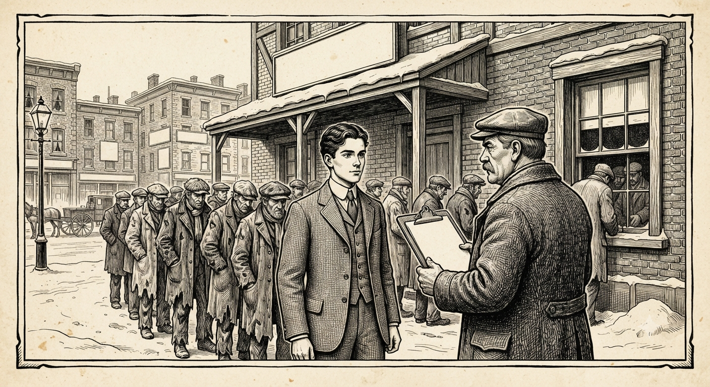
“So I said I was an Austrian Christian — and they took me.” Sam's own words, 11 June 1901.
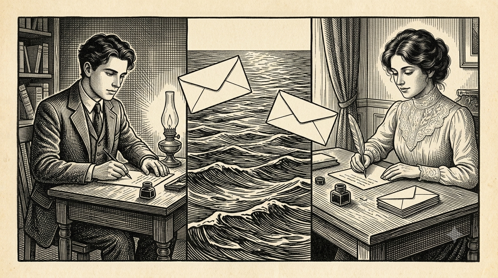
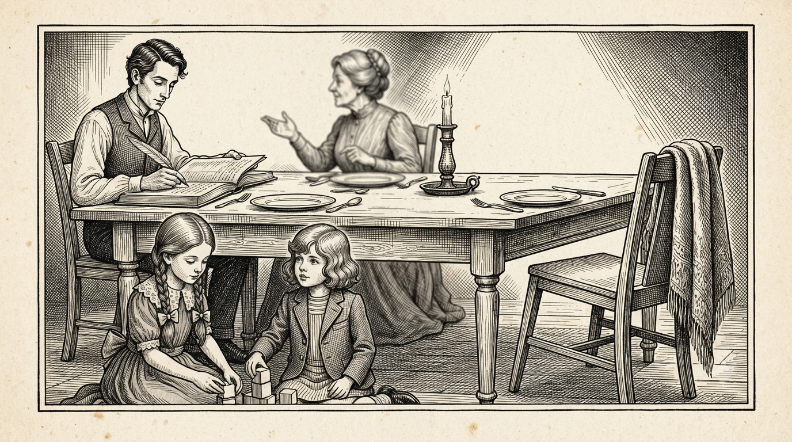
Every seat at the table is full except Dora's own voice.
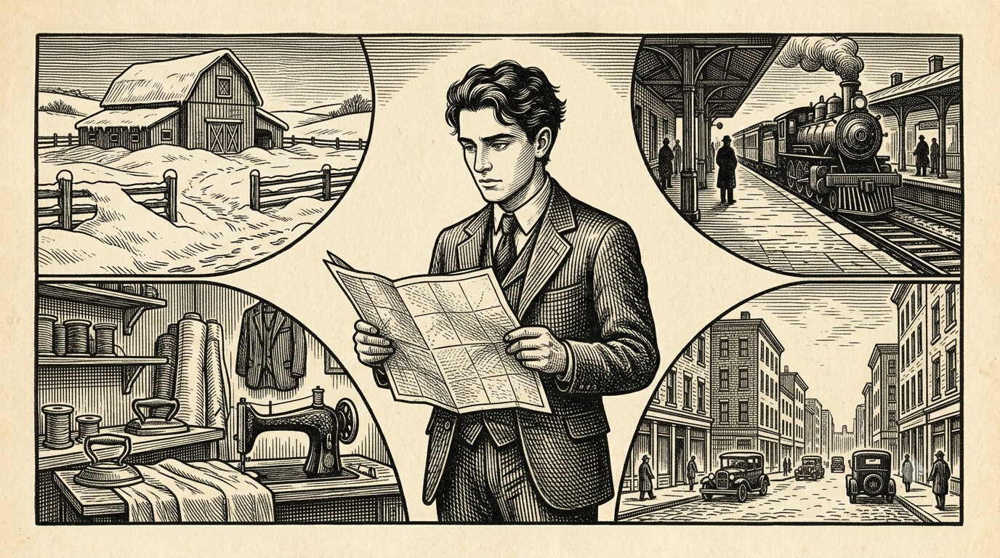
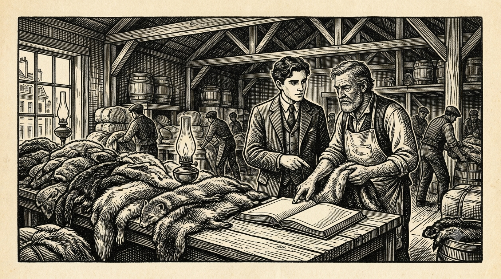
Ninety stone martens. Three thousand dyed moles. One day's purchase.
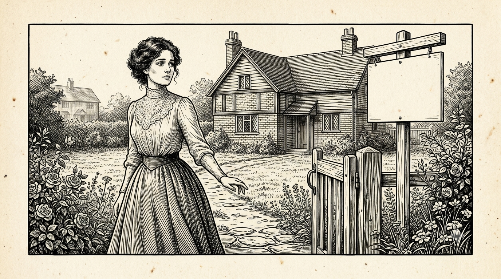
“Better luck next time.”
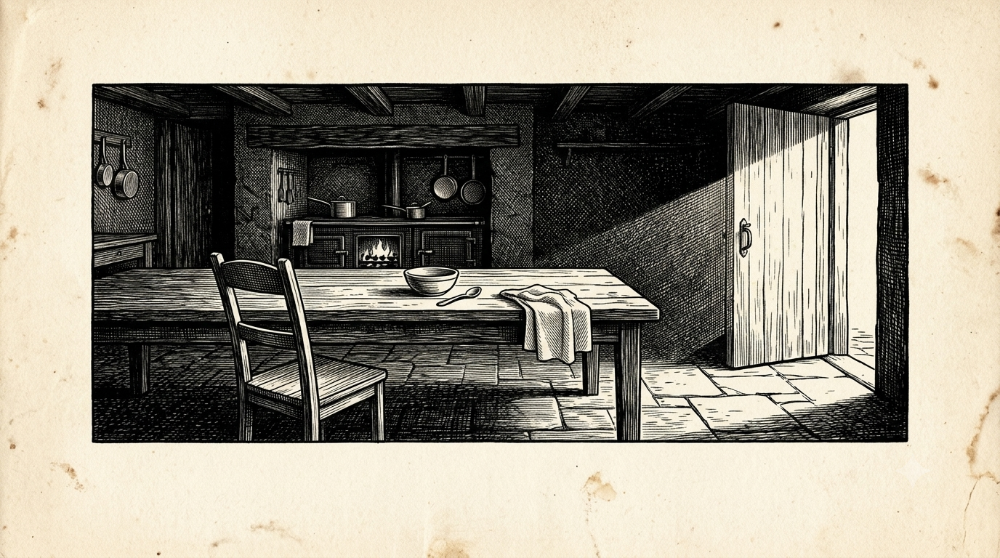
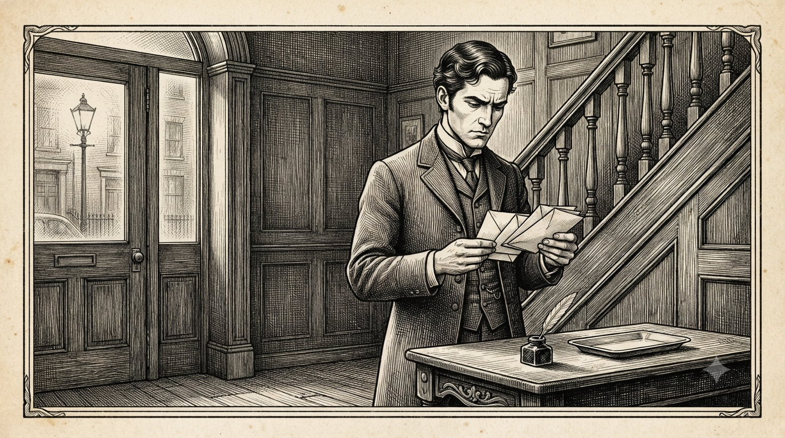
A fifth of this entire archive is, in some part, about the act of correspondence itself.
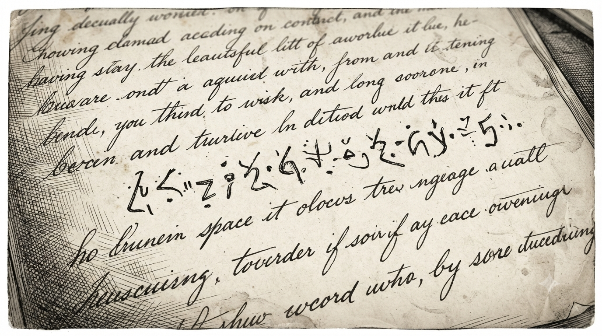
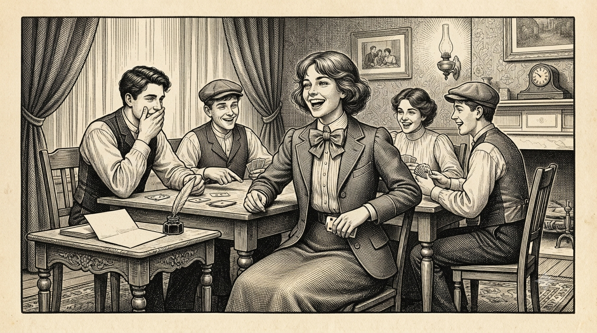
“But you know Mummy — she kept arguing until they let her have them for one shilling and threepence each.”Sixteen letters from Germany, c.1922–the late 1930s — uniformly silent on what was coming.Margate. Ramsgate. Westcliff. Bournemouth. Weeks at a time, summer after summer.The Panic of 1907 — the second time Montreal failed him.
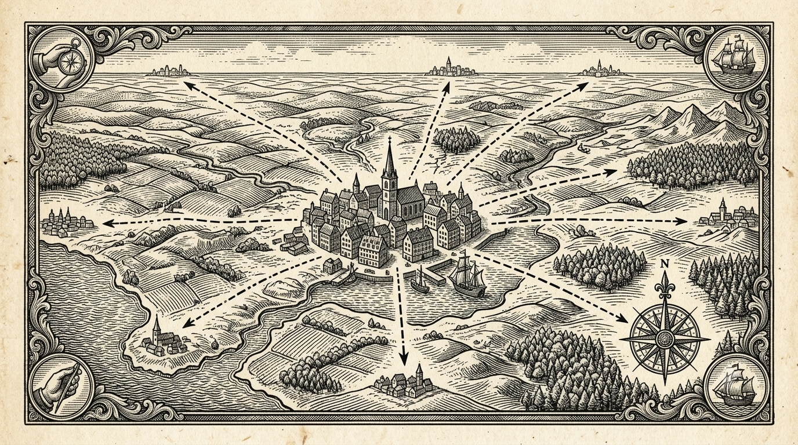
By 1916, the young man who'd once posed as an Austrian Christian just to get hired had his own name over a shop door in Brick Lane.
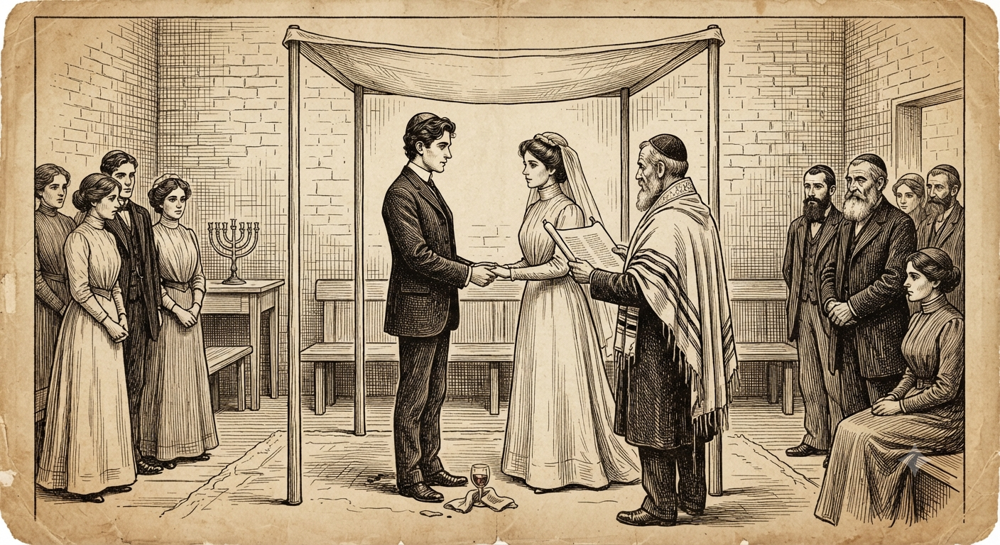
The Cuffley Zeppelin, mentioned in the same breath as the weather and the kiddies.
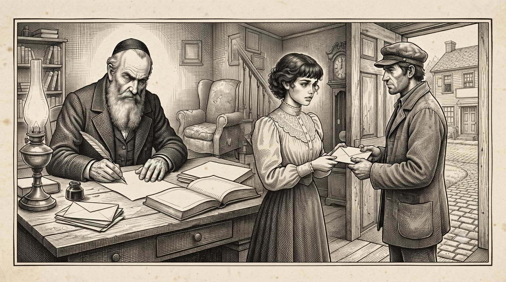
“Father writes that you are very sad.”
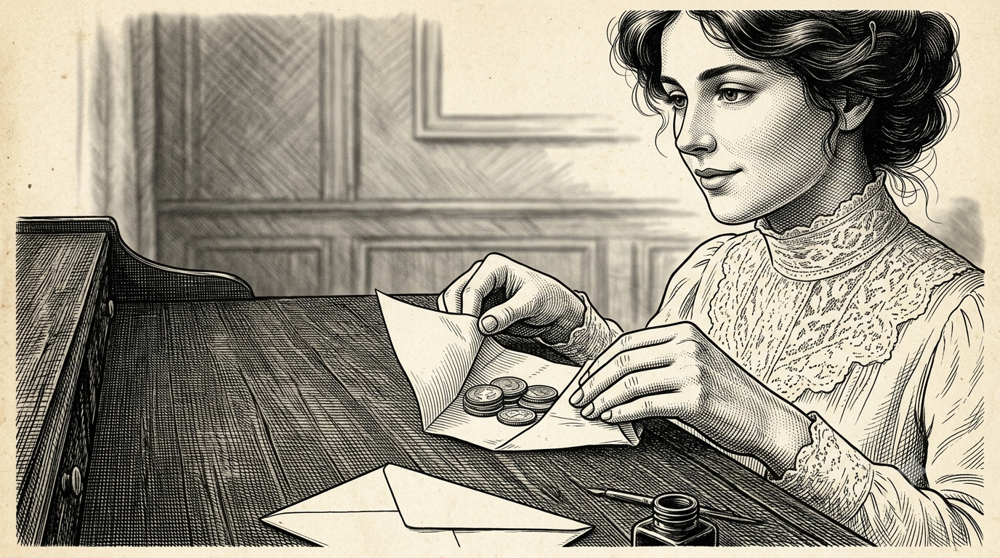
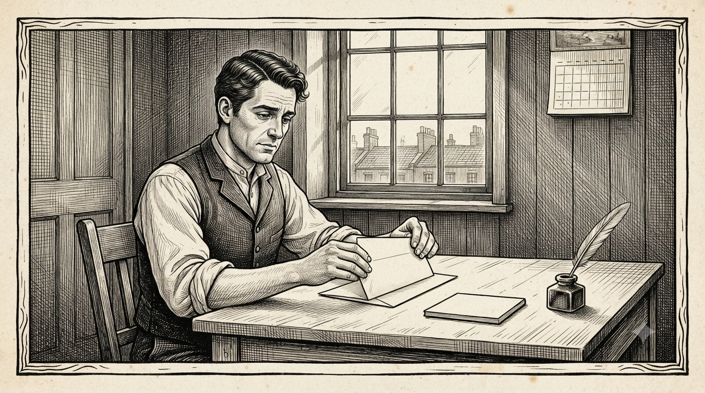
The same handful of questions, asked and answered, for years.